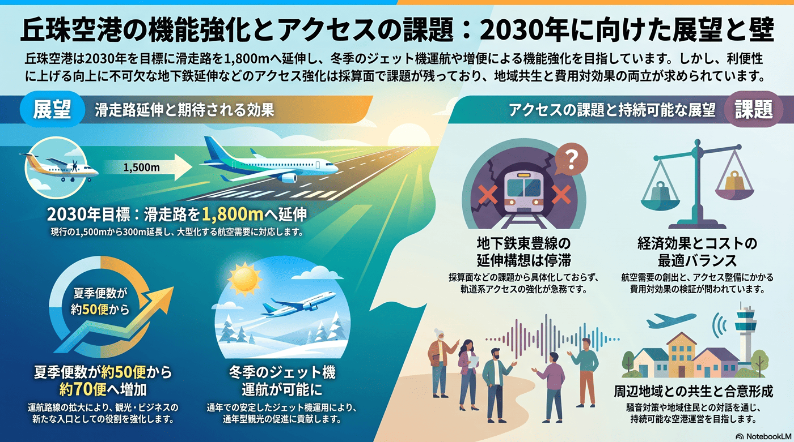

丘珠地区のアクセスと丘珠空港の機能強化
丘珠空港の滑走路を1,500m→1,800mに延長する計画が具体化（両端150m延長・事業費約160億円・来年度事業化目標）。冬季のジェット就航や医療搬送の改善が期待される一方、空港への軌道系アクセスは課題が残る。

背景
都心に近い丘珠空港は、滑走路を現行1,500mから1,800mへ延ばす計画が進み、冬季のジェット機運航や就航路線の拡大が期待される。市は2025年に丘珠空港と周辺地域の共生に関する基本構想を示した。一方、東豊線の丘珠空港方面への延伸構想は採算面などから具体化しておらず、空港アクセスの強化が残る課題となっている。
主要データ
| 滑走路延伸 | 1,500m→1,800m（両端を150mずつ、北西方向で先行。事業費 約160億円、工期3〜4年、来年度の事業化が目標） |
|---|---|
| 新ターミナル | 基本計画素案を提示、2030年度の供用開始を目指す |
| 期待効果 | 冬季も小型ジェットが発着可能に。夏季便数を約50→約70便へ |
| 医療搬送 | 医療用ジェット（メディカルウイング）の冬季制約が緩和し、搬送時間短縮が期待 |
| 残る課題 | 都心・地下鉄とを結ぶ軌道系アクセスは未整備 |
事実
- 国土交通省は丘珠空港の滑走路を現行1,500mから1,800mへ延長する方針を示した。両端を150mずつ延ばし、まず北西方向で先行する案で、事業費は約160億円、工期3〜4年、来年度の事業化を目標とする。
- 滑走路延伸により冬季も小型ジェット機の発着が可能になり、夏ダイヤの発着便数を現在の約50便から約70便へ増やすことも想定されている。
- 医療用ジェット『メディカルウイング』は冬季の滑走路制約で新千歳を使わざるを得ず陸路搬送に時間を要していたが、延伸で搬送時間の短縮が期待される。
- 2026年7月の市議会では新ターミナルビルの基本計画素案が示され、2030年度の供用開始を目指すとされた。
- 一方で、丘珠空港と都心・地下鉄を結ぶ軌道系アクセスは整備されておらず、機能強化に見合う交通結節の確保が課題として残る。
解釈
都心に近い空港の機能強化は観光・ビジネスの新たな入口になりうる。ただし航空需要と軌道系アクセスの費用対効果、周辺地域との共生をどう両立するかが問われる。
提案
- 滑走路延伸の効果を活かす路線誘致と、周辺地域との合意形成。
- 空港アクセスの強化（軌道系延伸の是非を含む需要・費用の検証）。
深掘り — 市民の声と答え
なぜ丘珠空港の滑走路を延ばすの？
いちばん大きいのは『冬でも小型ジェットが使える』ことです。現在の1,500mでは冬季にジェットの発着が制約され、医療用ジェット（メディカルウイング）も冬は新千歳に回って陸路搬送に時間がかかっていました。1,800mへ延ばせば冬季就航や医療搬送の改善、道内・本州路線の拡充（夏の便数を約50→70便）が見込めます。市街地に近い『第2の空の玄関』を強くする狙いです。ただし空港と都心を結ぶ軌道系アクセスが未整備で、そこをどう補うかが次の課題になります。
検討体制・メンバー
国・北海道・札幌市と空港運営者が連携する。市の検討会には航空・観光の専門家、周辺住民（騒音・共生）、交通アクセスの担当、経済界を加え、滑走路延伸の効果とアクセス整備、地域との共生を一体で議論する。
AIノート
AIの貢献度は小〜中。就航需要や経済波及の予測、騒音シミュレーション、アクセス交通の需要分析で計画判断を支える。滑走路工事や路線誘致そのものはAIの範囲外で、検討材料の精度向上が主な役割。